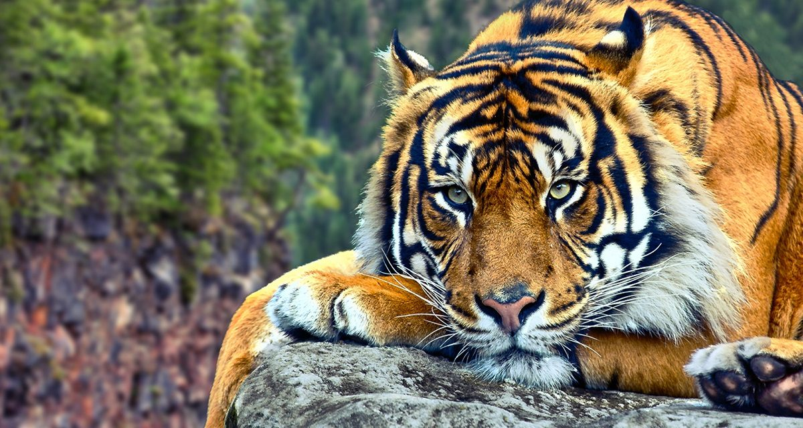

es un mamífero carnívoro de la familia de los félidos y una de las cinco especies del género Panthera. Los leones salvajes viven en poblaciones cada vez más dispersas y fragmentadas del África subsahariana y una pequeña zona del noroeste de India
Si sobreviven a las dificultades de la infancia, las leonas que viven en un hábitat seguro, como por ejemplo el Parque nacional Kruger, a menudo pueden llegar a la edad de 12-14 años, mientras que los leones raramente viven más de ocho años.6 Sin embargo, se conocen casos de leonas que han vivido hasta veinte años en estado salvaje. En cautiverio, tanto los machos como las hembras pueden vivir más de veinte años.
Los grupos de leonas suelen cazar juntos, atacando principalmente a grandes ungulados. El león es un superpredador y clave, pese a que puede tener un comportamiento carroñero si tiene la oportunidad. Aun cuando los leones, normalmente, no cazan humanos de manera selectiva, algunos de ellos pueden convertirse en antropófagos y buscar presas humanas.
Pulsa Aqui para saber mas sobre leoneses una de las cuatro3 especies de la subfamilia de los panterinos (familia Felidae) pertenecientes al género Panthera. Se encuentra solamente en el continente asiático; es un predador carnívoro y es la especie de félido más grande del mundo junto con el león pudiendo alcanzar ambos un tamaño comparable al de los fósiles de félidos de mayor tamaño.
Existen seis subespecies de tigre, de las cuales la de Bengala es la más numerosa; sus ejemplares constituyen cerca del 80 % de la población total de la especie; se encuentra en la India, Bangladés, Bután, Birmania y Nepal. Es una especie en peligro de extinción,4 y en la actualidad, la mayor parte de los tigres en el mundo viven en cautiverio. El tigre es el animal nacional de Bangladesh y la India.
Es un animal solitario y territorial que generalmente suele habitar bosques densos, pero también áreas abiertas, como sabanas.
